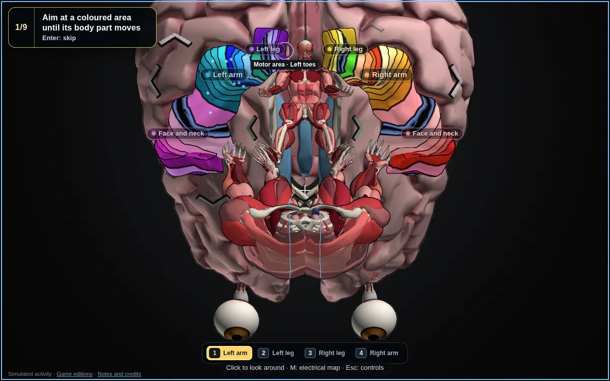

Movement preview
Move a virtual body with the motor strip or let it follow movement from your camera, a video or timed pictures. NeuroTranslate shows where a tracked point may appear a moment later.
Download Lite for offline play (ZIP) · Setup
Use a desktop browser with 3D graphics, a keyboard and a mouse or trackpad. For the forecast on its own, open the standalone Movement mirror.

Follow a movement and replay it
- Press C to open the motion recorder. Choose Start camera to request video access. Under Source, you can also choose a local video or timed pictures. The images stay on your device.
- To follow a forward arm lift, choose Left arm from the side or Right arm from the side under Follow. Turn sideways and keep that arm and your face and hips in view. Set up the side view.
- To move an arm and leg together, choose your arm and leg from the side under Follow. Set up a side view.
- Choose Left leg from the side or Right leg from the side to move a hip, knee and ankle from one camera view. Set up whole-leg tracking.
- Choose Movement forecast in the game toolbar, or press F and enter “forecast a tracked point”. Under Body follows, choose the part the virtual body will follow, including an arm from the side, a hip lift or a whole leg. Pick a point under Point to forecast. Brackets mark it when it is tracked. If the brackets disappear, read the prompt below the picture. The model uses five recent images. The amber ring shows where the point may appear 0.12 seconds later. The score shows two errors in pixels. Both use the same later tracked point. The stay-put prediction uses the last observed position. Use the Movement mirror.
- Under Forecast method, choose Adapt to recent tracking to use earlier camera feedback. If you know the movement, you can choose walking, squat, shoulder press or jumping jacks.
- In the forecast view, choose Save take and Open Command box. Enter replay my take to move the virtual body from the saved poses. The camera stops when the Command box opens. You can also open it with F to enter a supported move such as “bend my right elbow”. If your browser offers dictation on the device, choose Use voice and check the words before submitting.
- To keep a take for another visit, open Named takes in the Command box. Enter a name such as warm up and choose Save last take. Choose Download beside the name. The file keeps the movement values and their times. In a new tab, press F, open Named takes and use Open a take file. If that name is already in use, choose whether to keep the existing take or replace it. To play the movement, type replay take named warm up with the saved name.
- To play saved movements in order, press F and type replay take named warm up then replay take named reach. Use the names shown under Named takes. You can join up to four recordings. For a take at least two seconds long, try replay 1 to 2 seconds of take named warm up. That part uses the movements saved from the 1-second mark until just before the 2-second mark. The game checks every step before it starts. If two names fit, add a comma after the name you want. The camera stays off and each take plays at its saved pace. The game releases the previous movement before the next one starts. Choose Stop replay or press Esc to finish early.
Forecasts, local play and credits
The point model learned from tracked animal movement. The browser runs the included weights. The separate fingertip touch study uses the optional local launcher.
Earlier camera forecast test on 11 people
Open the 86-person camera forecast study.
Knowing the movement brought the average point error down to 13.42 pixels. Using earlier camera feedback reached 13.55 pixels. NeuroTranslate 0.0 averaged 14.60 pixels in the same test.
| Method | Point error | Motion error |
|---|---|---|
| Hold last position | 14.08 | 9.40 |
| Speed from the last two points | 14.33 | 9.48 |
| NeuroTranslate 0.0 | 14.60 | 10.69 |
| Recent positions, straight line | 14.96 | 10.00 |
| Recent positions, gentle curve | 14.79 | 9.82 |
| Use the movement name | 13.42 | 8.44 |
| Choose using tracking feedback | 13.70 | 8.68 |
| Blend using tracking feedback | 13.55 | 8.49 |
Eleven people took part in this confirmation test. Each walked, squatted, pressed their arms overhead and did jumping jacks. Two cameras filmed each of those 44 recordings. We averaged the views for each movement, then gave each movement and person equal weight.
Each forecast used up to five pictures to place a point about 0.12 seconds ahead. A separate set of cameras followed markers on the body. The researchers used those measurements to position the joint centres in the picture. Point error is the distance to that later position. Motion error compares how far and in what direction the point moved. For that comparison, the forecast and the marker measurement each use their own starting position. Both errors use pictures scaled to 640 pixels along their longer edge.
The named movement tells the forecast which rule to use. It continues the last speed for walking, fits a curve for squats and shoulder presses, and holds the last point for jumping jacks. We chose those rules using recordings from the earlier eight people.
Both feedback methods start by holding position. After an earlier forecast reaches its target time, we compare it with the closest tracker point within 0.04 seconds of that time. We divide the miss by the body's size in the picture, measured from the spread of the visible points. Each second halves the weight of older misses.
One method picks the rule with the lowest running error. The other combines the predictions, giving more weight to rules with lower errors. The blend's weighting scale is a quarter of the hold rule's running error, with a minimum of 0.01 after scaling for body size. Choose Adapt to recent tracking to use that blend.
The named and blended rules lowered the average point error for each of the 11 people, compared with holding position. Across people, the named rule missed by about 0.65 pixels less and the blend by 0.53 pixels less. We subtracted the hold rule's error from each method's error, so negative values mean smaller misses. When we resampled the people 10,000 times, the middle 95% of those differences ran from −0.840 to −0.484 pixels for the named rule and −0.682 to −0.367 pixels for the blend.
We used 11,305 images from 14,802 scheduled time slots and scored 31,523 of 64,815 forecasts. Of the 31,523, earlier tracking feedback was available for 29,394. The other 2,129 began or reset with the hold rule. Missing measurements around the target time accounted for 33,200 omissions. The other 92 lacked usable measured points.
The researchers aligned the cameras and marker measurements after recording. We used the archive's approximate 60-pictures-per-second grid. The exposure time of each picture remains unverified. A smaller timing check averaged the same 1,709 forecasts from 66 views together. The named rule and the blend had lower average point error than NeuroTranslate at five target times from about 0.033 seconds earlier to 0.033 seconds later. The in-game score compares forecasts with its own tracker’s later points.
The preview asks the browser to use the computer’s main processor to prepare each picture for tracking. We checked 1,003 pictures of one person doing the four movements. The pictures came from two cameras. On Linux, both tested Chromium graphics settings gave exactly the same tracked points as the original analysis for every picture.
Recordings by Chris-Mari Schreuder, Oloff Bergh, Lizé Steyn and Rensu P. Theart. The test reports aggregate errors from SUMediPose version 1.0. Original recordings · Study methods · Data licence